Festival de Fecamp (EuroVoiles)
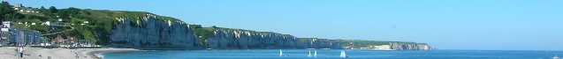
Fecamp, un festival très agréable par le site (son port, ses bateaux, ses falaises...) et la qualité de l'accueil. D'ailleurs, le festival de cerf-volant est couplé avec celui des Vieux Gréements ce qui répand dans la ville des ambiances de fête marine, cervolistique et celtique qui se multiplient l'une l'autre.

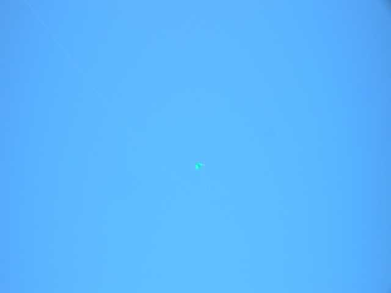
Pour commencer doucement, Michel est arrivé depuis Jeudi et tranquille dans le ciel, monte son delta à 500 m sur la mer dès le matin...

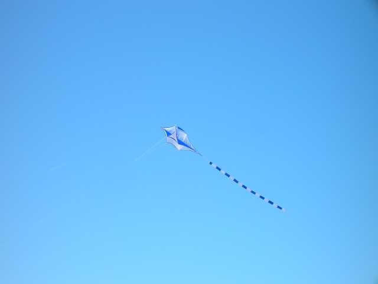
Même en ce samedi matin, pas mal de cerfs-volants sont de sortie. Peut-être parce qu'il fait encore à peu près frais !

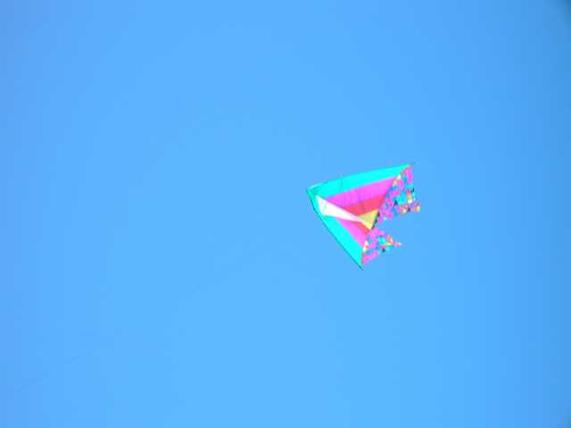
Il y aura beaucoup de cerfs-volants inspirés du delta : pyrodeltas, c'est une manie en ce moment, les marchands de spi se frottent les mains, mais faudrait un peu créer du nouveau, les mecs ! Ou ce delta avec un queue en tapisserie ajourée et aux couleurs... chatoyantes.

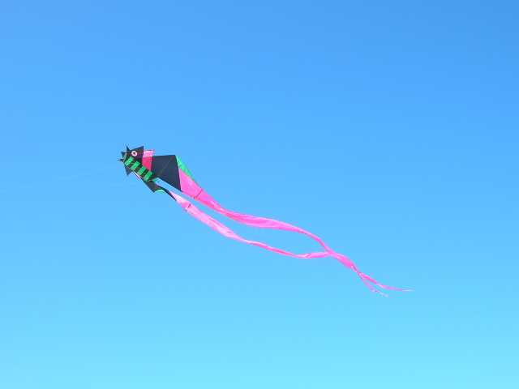
Une autre déclinaison de delta par les hollandais, mais au moins, eux ont apporté du leur à ce delta abeille !

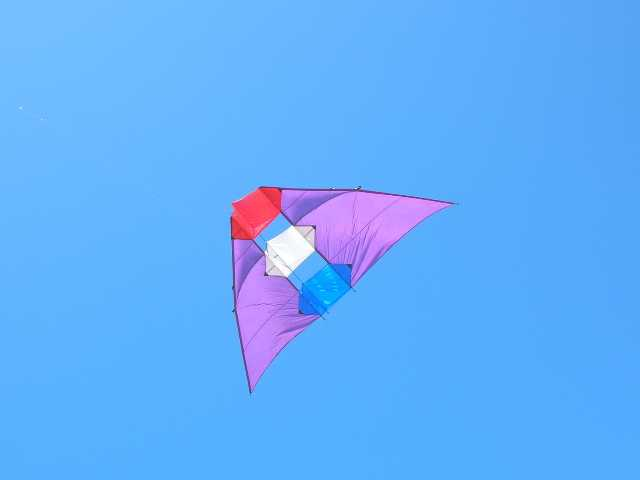
...Ils ont aussi ce delta quasi-conyne à 3 cellules tricolores...

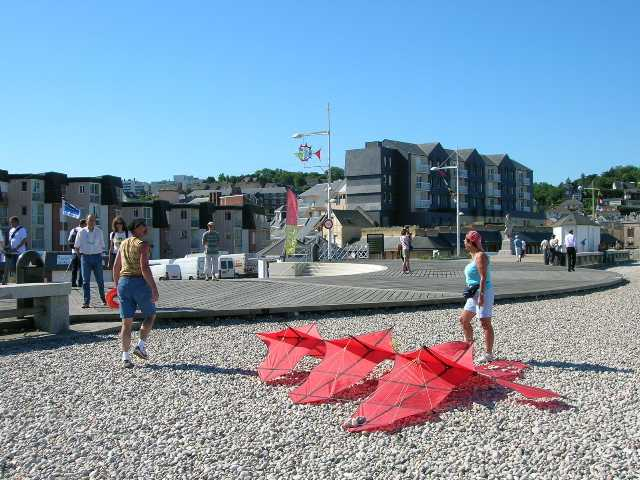
Mais j'aime beaucoup l'architecture de celui-là, dommage, le vent était bien bas à l'heure de la photo !

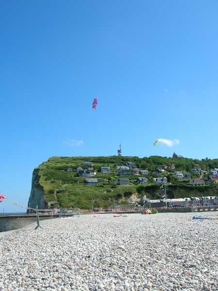
Les Gwenn Ha Du s'étaient mis tout à droite. On ne peut pas beaucoup rouler sur la plage, mais ils se sont démenés sur la promenade, au milieu des piétons innocents... Non, la Nasa de droite ne brûle pas, c'est un nuage derrière.

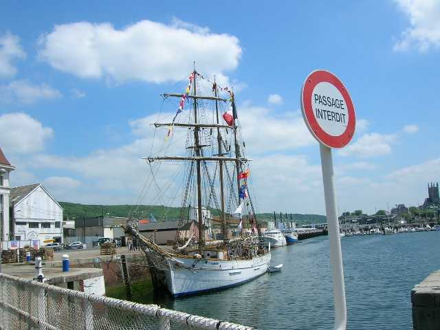
Le Marité était revenu au port après la série des Thalassa. Une partie de l'équipe télé a même participé au dîner.

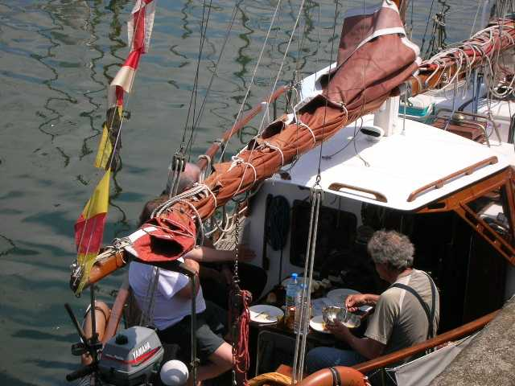
Mais il y avait beaucoup de bateaux en bois, à part le Marité...

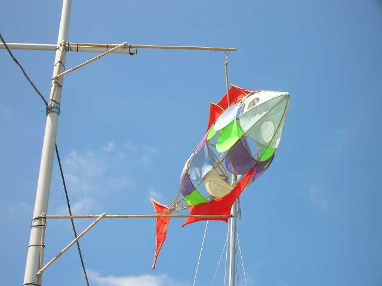
La ville était bien décorée, chaque réverbère muni d'une maquette en bois et toile souvent splendide...

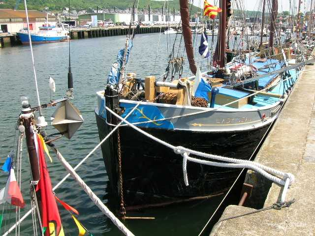
Le Lady Jean est aussi un gros bateau en bois, à 2 mâts. Je laisse les marins me dire si c'est une goélette ou quoi...

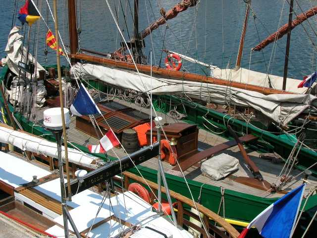
Et toujours un remarquable travail du bois...

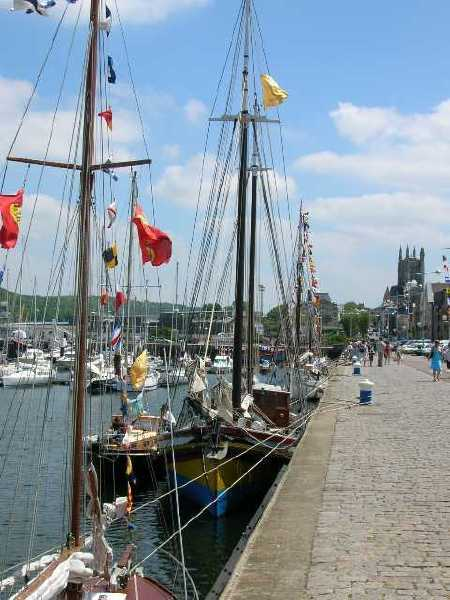
Encore des gréements de vieux gréements...

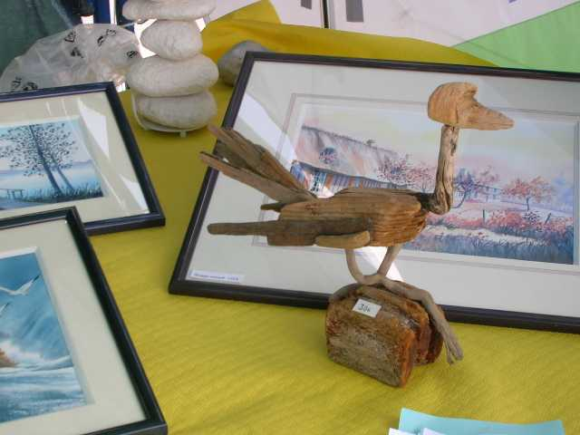
Revenons à la plage, une aquarelliste avait installé son atelier-échoppe avec les cervolistes. Elle faisait aussi un peu d'art-gravage (voir reportage Cherbourg 2004).

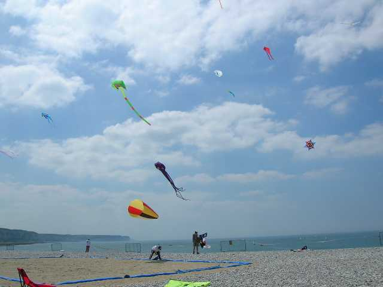
Mais sur la plage, ça continuait à voler, malgré un vent limité et une chaleur torride.

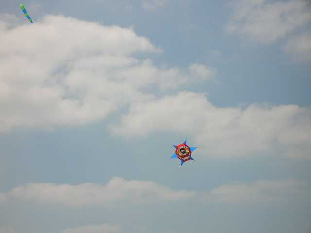
Et voilà encore des cerfs-volants aux belles couleurs, ceux-là...

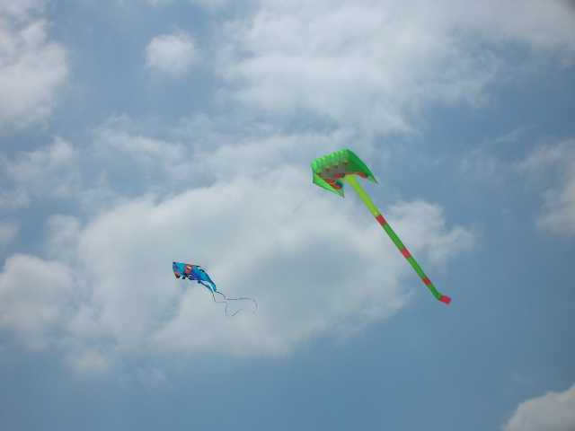
Un flow-form d'un joli vert printanier...

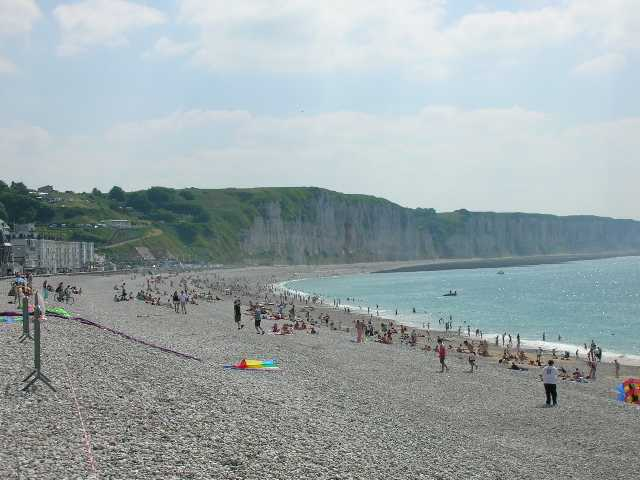
Mais avec la chaleur sans vent beaucoup de baigneurs profitaient de la plage comme le malheureux cv qui bronze à gauche...

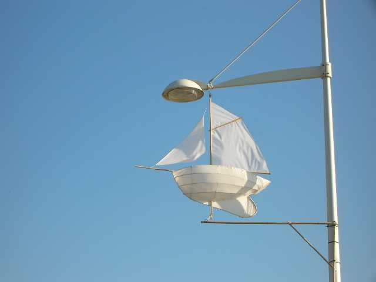
Devant l'adversité, on a posé les cerfs-volants et préparé la migration vers le barnum pour le grand dîner !

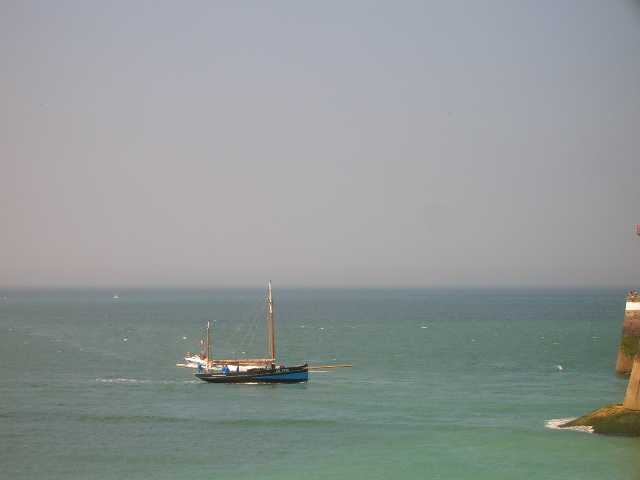
Un Vieux Gréement rentrait au port...

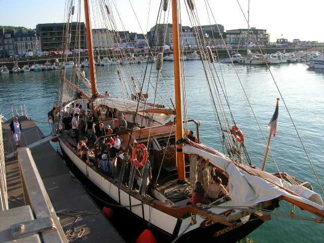
Pendant que le "Tante xxx" emmenait encore une dernière cargaison de passagers faire un tour en mer, pas beaucoup à la voile, mais on les excusait...

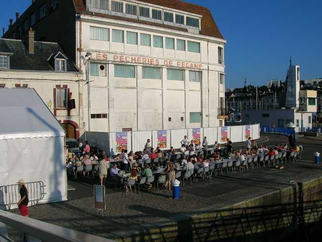
Le barnum-restaurant était immense, mais il a encore fallu mettre des tables dehors....

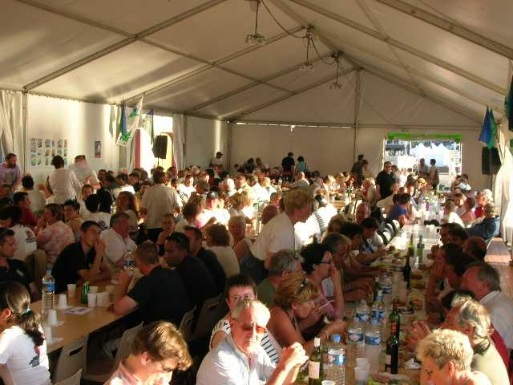
Et dedans, c'était plein et même très chaud : l'ouverture des côtés apportait un peu d'air, mais exposait au soleil...

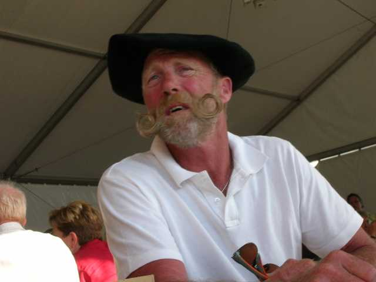
Et ce hollandais, vous ne l'oublierez pas, tout le monde l'appelle Moustache et il comprend, bien que sa connaissance du français soit limitée...

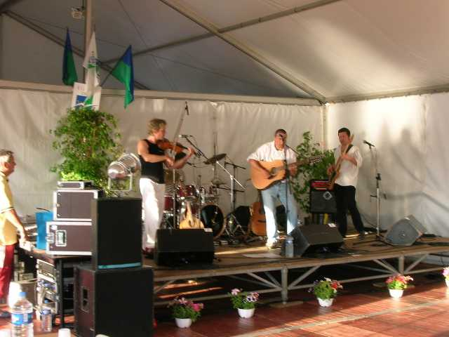
Un orchestre d'inspiration celtique s'est occupé avec succès de mettre de l'ambiance, mais la farandole, ça donnait chaud... heureusement, le rosé était frais !

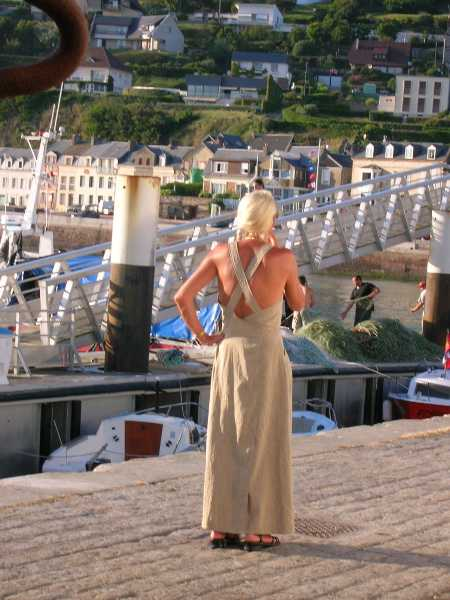
Une sirène au superbe bronzage prenait, elle, le frais à l'extérieur...

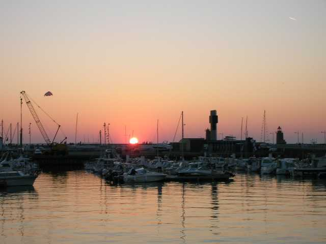
Eh bien, en sortant de table, le soleil se couchait. Mais il ne manquait pas d'animation dans les rues de Fécamp, avec des orchestres partout. Nous avons même improvisé un petit vol de nuit avec les Gwenn Ha Du et quelques cervolistes au matériel light, au dessus des baigneurs revenus sur la plage...

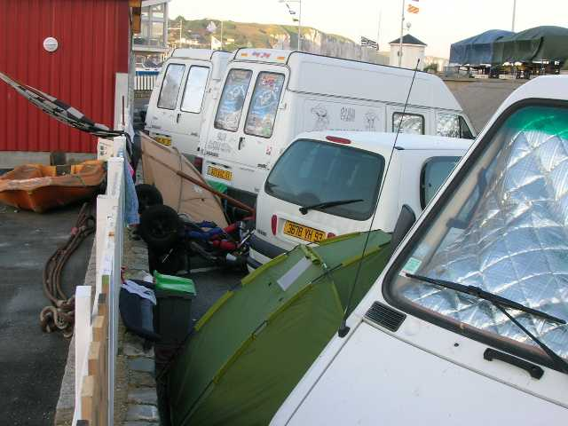
Mais au dimanche petit matin (6h !), j'ai dû repartir et laisser les Gwenn et leur capharnaüm, c'était la fête des Navettes à Epernon, plus intime... Merci les fécampois !